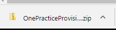
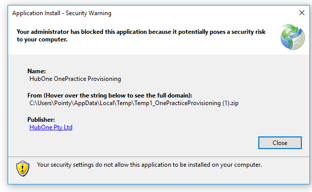
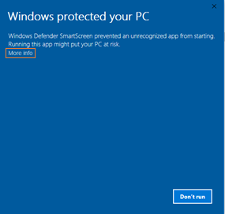

The following procedure details how to install OnePractice prerequisites.
Step |
Instructions |
Screenshot |
|---|---|---|
1 |
Navigate to http://software.hubone.com
Click Portal Provisioning Tool. |
 |
2 |
Click the link. |
|
3 |
The Application will download as a Zip File.
Once it has downloaded, click the Zip File. |
 |
4 |
Next double click setup. |
|
5 |
If you see the error message as displayed to the right, navigate to https://msdn.microsoft.com/en-us/library/ee308453.aspx for instructions on how to resolve. |
 |
6 |
If the Windows Defender app appears, click More info.
Then click Run Anyway. |

|
7 |
Click Install. |
|
8 |
The OnePractice Provisioning Portal will download and install. When complete, there will be a pause and the dialog will disappear. |
|
9 |
Shortly after, the OnePractice Provisioning Manager will run. |
|
10 |
If you are using the user you created in Part 1, you can mark that the user is a global administrator.
If not, please confirm the user account you are using is a global administrator. |
|
11 |
Ensure your user has a valid Office 365 licence.
You can check this by navigating to https://portal.office.com/adminportal/home#/users and reviewing the status and product licenses.
If they do not have a license, assign an E3, E5 or business premium license. Wait 30 minutes for Microsoft to apply the license, then continue to step 12. |
 |
12 |
Mark that your user has a valid E3 or E5 License. |
|
13 |
Ensure your user is a SharePoint Site Collection Administrator.
This will be true if you set up a new tenancy as per Part 1: Order Office 365 Trial or if they are a Global Administrator and have been granted site administration permissions in the SharePoint admin center. |
|
14 |
Next, enable Custom scripting on the SharePoint Library.
Please note, step 15 assumes you do not have the required components installed. |
|
15 |
To enable custom scripting, click How do I do this? to obtain a set of instructions.
Once you have the required components, these instructions assume you have some proficiency in the use of PowerShell.
Once you have completed those instructions, mark the check box. |
|
16 |
Next, you need to create an App Catalog.
Click How do I do this? next to the App Catalog checkbox to obtain a set of instructions.
You are required to verify the app catalog as it is critical to the operation of Templates.
Once you have completed those instructions, mark the check box.
|
|
*** PROCEDURE COMPLETE *** |
||